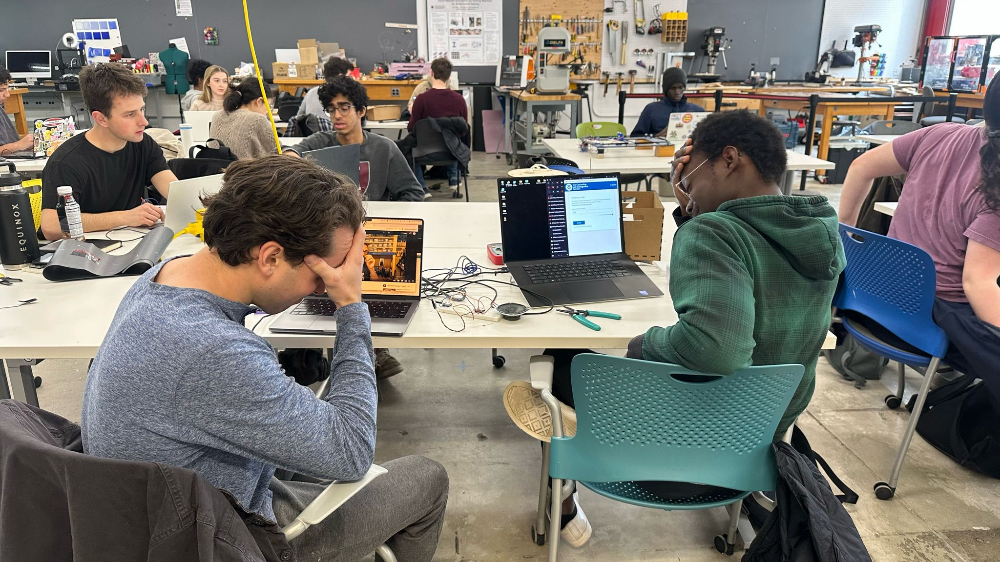
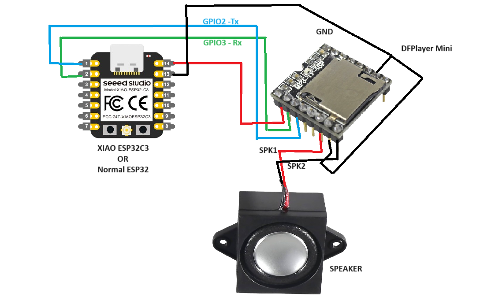
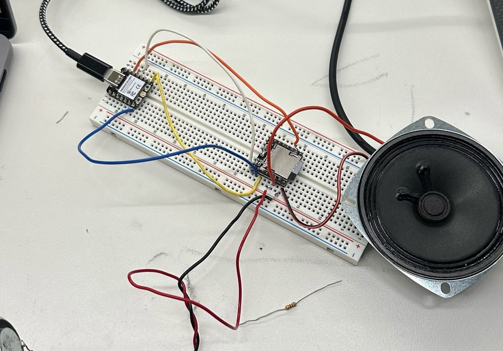

This week was all about networking. The assignment: work in a group of up to three to program one or more microcontrollers to obtain and respond to information via the internet or radio.
Naturally, we took this opportunity to do something both educational and profoundly ridiculous.
We began with a simple setup inspired by class: a local area network service using the ESP32 microcontroller and a standard example from the Arduino IDE. We hosted a basic HTML page locally that let us toggle an LED on and off via a web button. It was simple, satisfying, and a great way to get familiar with WiFi control through a browser.
But of course, we couldn't stop there.
We wanted to push things further—riffing through different ideas until we landed on something wonderful: creating a locally hosted LAN interface that could play a selection of the juiciest, most carefully curated flatulence sounds in existence. The dream? A web-controlled Internet of Toots device.
For this, we used an ESP32 microcontroller paired with a DFPlayer Mini. We uploaded a test MP3 to a FAT32-formatted microSD card, inserted it into the DFPlayer, wired up the system, and edited our code to recognize and interface with the DFPlayer. The goal was for the ESP32 to play specific audio files when buttons were pressed on our locally hosted webpage.
This is where the dream hit a bump.
We ran into a slew of issues getting the ESP32 to actually communicate with the DFPlayer. Despite rewiring the setup multiple times, double-checking our formatting, and troubleshooting our code from all angles, the DFPlayer simply refused to behave. Initially, we suspected a formatting issue with the SD card, but even after confirming FAT32 and proper file names, the playback still failed.
After an absurd amount of debugging, we discovered that the ESP32 and DFPlayer Mini are notoriously finicky when it comes to working together. Compatibility issues, strange timing bugs, voltage quirks—you name it. In the end, we realized we wouldn't be able to fully resolve the connection issue in time for the assignment deadline so our significant efforts would have to suffice… for now!
So, presently, our progress includes a working web-based LED control system and a wired setup intended for audio playback that—while not functional yet—has a solid foundation for future improvement. It's not quite the Internet of Toots we dreamed of… but it's close.
Below is a photo of our current setup.
Also, here's the current iteration of our code:
← Back to Home